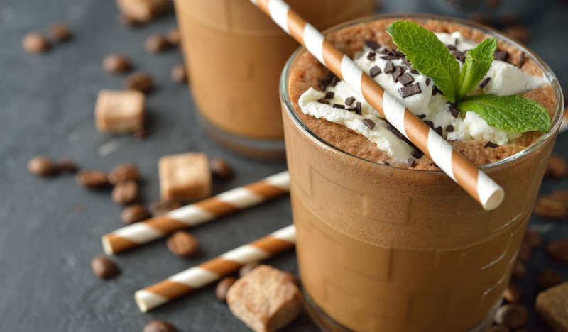

Добро пожаловать в нашу кофейню!
Мы гордимся тем, что предлагаем вам уютное место, где вы можете насладиться непревзойденным вкусом свежесваренного кофе.
Наша цель - создать вам идеальное место для встреч с друзьями, проведения деловых встреч или просто для расслабления и наслаждения моментом.
Мы стремимся предоставить вам лучший опыт кофейного сервиса. Наши баристы - настоящие мастера своего дела, которые с радостью поделятся своими знаниями о кофе и помогут вам выбрать напиток, идеально соответствующий вашим предпочтениям.
Мы гордимся тем, что используем только самые свежие и высококачественные кофейные зерна. Мы работаем непосредственно с фермерами и поставщиками, чтобы убедиться, что каждая чашка кофе, которую мы готовим, отражает непревзойденный вкус и аромат этого удивительного напитка.
Кроме кофе, мы предлагаем широкий выбор других напитков, включая чай, свежевыжатые соки и безалкогольные коктейли.
Мы также имеем разнообразный ассортимент выпечки и закусок, чтобы удовлетворить ваш аппетит.
Мы верим, что хороший кофе - это не просто напиток, это целый ритуал.

Поэтому мы создали атмосферу, которая вас вдохновляет, расслабляет и приносит удовольствие.
Мы приглашаем вас посетить нашу кофейню и насладиться неповторимым опытом, который мы создали для вас.
Добро пожаловать в наш мир кофе!
Весенняя новинка!
Фраппе по праву считается самым знаменитым напитком, в состав которого входит холодный кофе. Появился он аж в 1957 году благодаря представителям компании Nestle.
Традиционно фраппе готовится с помощью специального шейкера или блендера. В шейкер или блендер добавляют растворимый кофе, сахар по вкусу и небольшое количество воды.
Разнообразить данное сочетание можно с помощью молока или взбитых сливок, а ягоды малины могут превратить напиток в настоящий кулинарный шедевр.
Фраппе может быть приготовлен с различными вариациями. Например, можно добавить ванильный экстракт, шоколадный сироп или взбитые сливки для придания разнообразия вкусу.
Также существуют варианты фраппе без кофе, где кофе заменяется какао, фруктовым сиропом или другими ароматизаторами.
Фраппе обычно подается в высоком стакане и украшается взбитыми сливками, шоколадной стружкой или корицей.
Он является популярным напитком в жаркую погоду, так как отлично освежает и охлаждает.
Он доступен во многих кофейнях и заведениях, которые предлагают различные варианты этого напитка.
Так что если вы ищете освежающий и вкусный напиток, фраппе может быть отличным выбором!
Участвуй в беспроигрышной лотереи
- Мобильное приложение